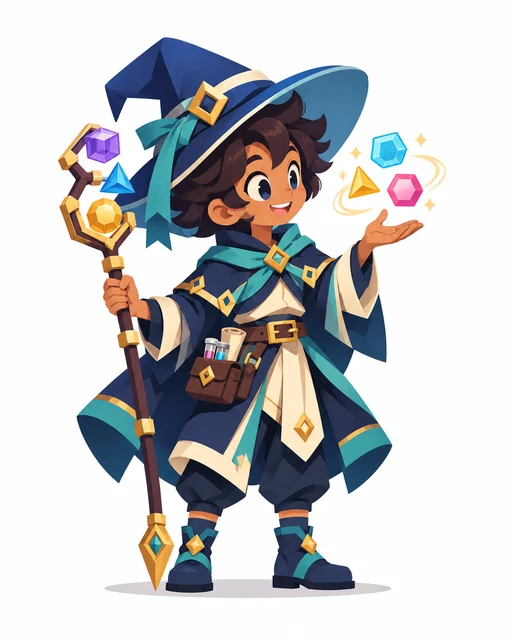
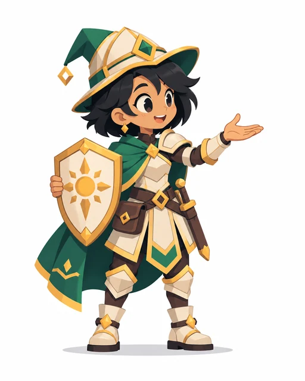
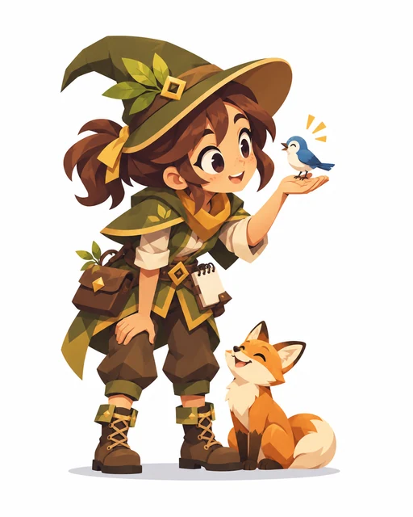
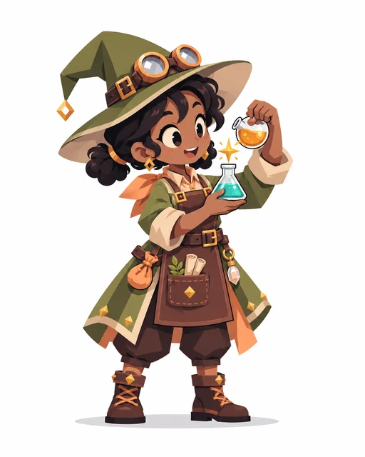
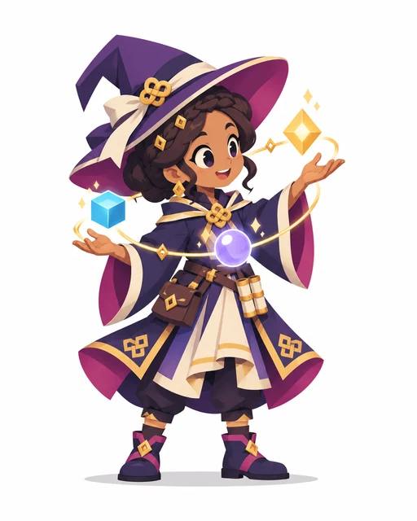
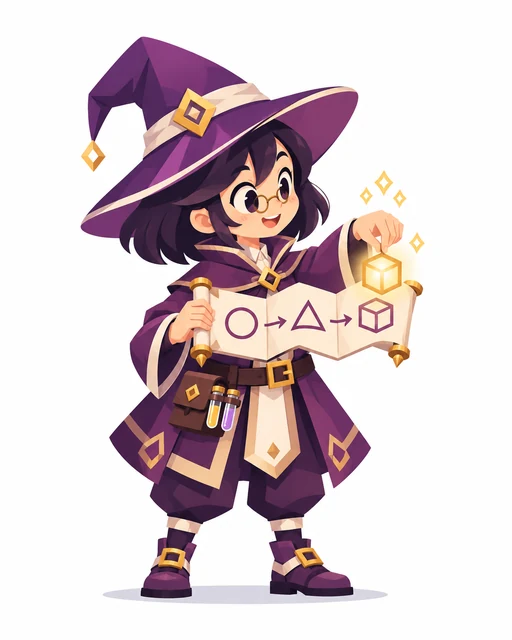

27 Wizards of Learning · Character GalleryNecromancerFamily C
Mage / GeneralistFamily AScholarFamily AElementalistFamily AGeomancerFamily A ChronomancerFamily A
ChronomancerFamily A DivinerFamily A
DivinerFamily A Force MageFamily AHealerFamily BPriestFamily B
Force MageFamily AHealerFamily BPriestFamily B
Holy KnightFamily BWardenFamily B
BeastmasterFamily BTransmuterFamily B
AlchemistFamily BWarlock / HexerFamily C
SummonerFamily CSpirit MediumFamily CShamanFamily C
RitualistFamily CIllusionistFamily DEnchanterFamily DBard / Artist MageFamily DMimic / Blue MageFamily D ArtificerFamily ESpellbladeFamily E
ArtificerFamily ESpellbladeFamily E Blood MageFamily E
Blood MageFamily E